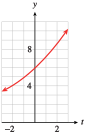
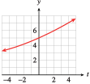

Exercises 1.2 Chapter 4 Review Problems
¶For Problems 1–4,
Write a function that describes exponential growth or decay.
Evaluate the function at the given values.
1.
The number of computer science degrees awarded by Monroe College has increased by a factor of \(1.5\) every \(5\) years since 1984. If the college granted \(8\) degrees in 1984, how many did it award in 1994? In 2005?
\(D = 8(1.5)^{t/5}\)
\(18\text{;}\) \(44\)
2.
The price of public transportation has been rising by \(10\%\) per year since \(1975\text{.}\) If it cost $\(0.25\) to ride the bus in \(1975\text{,}\) how much did it cost in \(1985\text{?}\) How much will it cost in the year \(2010\) if the current trend continues?
3.
A certain medication is eliminated from the body at a rate of \(15\%\) per hour. If an initial dose of \(100\) milligrams is taken at \(8\) a.m., how much is left at \(12\) noon? At \(6\) p.m.?
\(M = 100(0.85)^t\)
\(52.2\) mg; \(19.7\) mg
4.
After the World Series, sales of T-shirts and other baseball memorabilia decline \(30\%\) per week. If $\(200,000\) worth of souvenirs were sold during the Series, how much will be sold \(4\) weeks later? After \(6\) weeks?
For Problems 5-8, use the laws of exponents to simplify.
For Problems 5-8, find a growth or decay law for the function.
13.
The president's approval rating increased by \(12\%\) and then decreased by \(15\%\text{.}\) What was the net change in his approval rating?
\(4.8\%\) loss
14.
The number of students at Salt Creek Elementary School fell by \(18\%\) last year but increased by \(26\%\) this year. What was the net change in the number of students?
15.
Enviroco's stock is growing exponentially in value and increased by \(33.8\%\) over the past \(5\) years. What was its annual rate of increase?
\(6\%\) loss
16.
Sales of the software package Home Accountant 3.0 fell exponentially when the new version came out, decreasing by \(60\%\) over the past 3 months. What was the monthly rate of decrease?
For Problems 17–20,
Graph the function.
List all intercepts and asymptotes.
Give the range of the function on the domain \([-3, 3]\text{.}\)
17.
\(f (t) = 6(1.2)^t\)
- 
\(y\)-intercept \((0, 6)\text{;}\) asymptote: \(y = 0\)
\([3.472, 10.368]\)
18.
\(g(t) = 35(0.6)^{-t}\)
19.
\(P(x) = 2^x - 3\)

\(x\)-intercept \(\left(\frac{\log 3}{\log 2}, 0 \right) \text{;}\) \(y\)-intercept \((0, -2)\text{;}\) asymptote: \(y = -3\)
\([-2.875,5]\)
20.
\(R(x) = 2^{x+3}\)
For Problems 21-24, solve the equation.
For Problems 25–28,
Graph both functions in the same window. Are they equivalent?
Justify your answer to part (a) algebraically.
25.
\(P(t) = 5(2^{t/8}), ~~~Q(t) = 5(1.0905)^t\)
-

Not (quite) equivalent
\(2^{1/8}\approx 1.090507733\gt 1.0905 \)
26.
\(M(x) = 4(3^{x/5}), ~~~N(x) = 4(1.2457)^x\)
27.
\(H(x) =\left(\dfrac{1}{3} \right)^{x-2}, ~~~G(x) = 9\left(\dfrac{1}{3} \right)^x\)
-

Equivalent
\(\left(\dfrac{1}{3} \right)^{x-2} =\left(\dfrac{1}{3} \right)^{x}\cdot \left(\dfrac{1}{3} \right)^{-2} =\left(\dfrac{1}{3} \right)^{x}\cdot 9 \)
28.
\(F(x) = \left(\dfrac{1}{2} \right)^{2x-3}, ~~~L(x) = 8\left(\dfrac{1}{4} \right)^{x}\)
For Problems 29–32, \(f (x) = 2^x\text{.}\)
Write a formula for the function.
Use transformations to sketch the graph, indicating any intercepts and asymptotes.

In Problems 33–36, we compare power and exponential functions. Let
33.
Graph both functions in the window \(\text{Xmin} = 0\text{,}\) \(\text{Xmax} = 10\text{,}\) \(\text{Ymin} = 0\text{,}\) \(\text{Ymax} = 120\text{.}\) Which function grows more rapidly for large values of \(x\text{?}\)
\(g\) eventually grows faster.
34.
Estimate the solutions of \(f (x) = g(x)\text{.}\) For what values of \(x\) is \(f (x) \gt g(x)\text{?}\)
35.
When \(x\) doubles from \(2\) to \(4\text{,}\) \(f (x)\) grows by a factor of , and \(g(x)\) grows by a factor of .
\(2^{1.5}\approx 2.83\text{;}\) \(2.25\)
36.
What is the range of \(f (x)\) on the domain \([0, 100]\text{?}\) What is the range of \(g(x)\) on the same domain?
37.
"Within belts of uniform moisture conditions and comparable vegetation, the organic matter content of soil decreases exponentially with increasing temperature." Data indicate that the organic content doubles with each \(10\degree\)C decrease in temperature. Write a formula for this function, stating clearly what each variable represents. (Source: Leopold, Wolman, Gordon, and Miller, 1992)
\(M = M_0(2)^{t/10}\text{,}\) where \(M\) is the organic content, \(M_0\) is the organic content at \(0\degree\)C, and \(t\) is the temperature in \(\degree\) Celsius.
38.
In 1951, a study of barley yields under diverse soil conditions led to the formula
where \(V\) is a soil texture rating, \(G\) is a drainage rating, and \(a\text{,}\) \(b\text{,}\) and \(c\) are constants. In fields with similar drainage systems, the formula gives barley yields, \(Y\text{,}\) as a function of \(V\text{,}\) the soil texture. What type of function is it? If it is an increasing function, what can you say about \(a\text{?}\) (Source: Briggs and Courtney, 1985)
For Problems 39-44, find the logarithm.
For Problems 45-46, write the equation in logarithmic form.
45.
\(0.3^{-2} = x + 1\)
\(\log_{0.3}(x + 1) = -2\)
46.
\(4^{0.3 t} = 3N_0\)
For Problems 47-50, solve.
For Problems 51-54, write the expression in terms of simpler logarithms. (Assume that all variables and variable expressions denote positive real numbers.)
For Problems 55-58, write the expression as a single logarithm with coefficient \(1\text{.}\)
55.
\(\dfrac{1}{3}\left(\log_{10} x-2\log_{10}y \right) \)
\(\log\sqrt[3] {\dfrac{x}{y^{2}}} \)
56.
\(\dfrac{1}{2}\log_{10}( 3x)-\dfrac{2}{3}\log_{10}y \)
57.
\(\dfrac{1}{3} \log_{10} 8 -2\left(\log_{10}8-\log_{10} 2 \right) \)
\(\log {\dfrac{1}{8}} \)
58.
\(\dfrac{1}{2}(\log_{10}9+2\log_{10}4)+2\log_{10}5\)
For Problems 59–62, solve the equation by using base 10 logarithms.
63.
Solve \(N = N_0(10^{kt} )\) for \(t\text{.}\)
\(\dfrac{\log(N/N_0)}{k}\)
64.
Solve \(Q = R_0+R \log_{10} kt\) for \(t\text{.}\)
65.
The population of Dry Gulch has been declining according to the function
where \(t\) is the number of years since the town's heyday in \(1910\text{.}\)
What was the population of Dry Gulch in 1990?
In what year did the population dip below \(120\) people?
\(238\)
\(2010\)
66.
The number of compact discs produced each year by Delta Discs is given by the function
where \(t\) is the number of years since discs were introduced in \(1980\text{.}\)
How many discs did Delta produce in \(1989\text{?}\)
In what year did Delta first produce over 2 million discs?
67.
Write a formula for the cost of a camera \(t\) years from now if it costs $\(90\) now and the inflation rate is \(6\%\) annually.
How much will the camera cost \(10\) months from now?
How long will it be before the camera costs $120?
\(C = 90(1.06)^t\)
$\(94.48\)
\(5\) years
68.
Write a formula for the cost of a sofa \(t\) years from now if it costs $\(1200\) now and the inflation rate is \(8\%\) annually.
How much will the sofa cost \(20\) months from now?
How long will it be before the sofa costs $\(1500\text{?}\)
69.
Francine inherited $\(5000\) and plans to deposit the money in an account that compounds interest monthly.
If she can get \(5.5\%\) interest, how long will it take for the money to grow to $\(7500\text{?}\)
What interest rate will she need if she would like the money to grow to $\(6000\) in \(3\) years?
\(7.4\) years
\(6.1%\)
70.
Delbert received a signing bonus of $\(2500\) and wants to invest the money in a certificate of deposit (CD) that compounds interest quarterly.
If the CD pays \(4.8\%\) interest, how long will it take his money to grow to $\(3000\text{?}\)
What interest rate will he need if he would like the money to grow to $\(3000\) in \(1\) year?
For Problems 71-74, find an exponential growth or decay function that fits the data.
75.
The population of Sweden is growing at \(0.1\%\) annually.
What is the doubling time for Sweden's population?
In \(2005\text{,}\) the population of Sweden was \(9\) million. At the current rate of growth, how long will it take the population to reach \(10\) million?
\(\dfrac{\log 2}{\log 1.001}\approx 693 \) years
\(105\) years
76.
The bacteria E. sakazakii is found in powdered infant formula and can has a doubling time of \(4.98\) hours even if kept chilled to \(50\degree\)F.
What is the hourly growth rate for E. sakazakii?
How long would it take a colony of E. sakazakii to increase by \(50\%\text{?}\)
77.
Manganese-53 decays to chromium-53 with a half-life of \(3.7\) million years and is used to estimate the age of meteorites. What is the decay rate of manganese-53, with time expressed in millions of years?
\(17\%\)
78.
The cold medication pseudoephedrine decays at a rate of \(5.95\%\) per hour in the body. What is the half-life of pseudoephedrine?
79.
You would like to buy a house with a \(20\)-year mortgage for $\(300,000\text{,}\) at an interest rate of \(6.25\%\text{,}\) compounded monthly. Use the formula for the present value of an annuity to calculate your monthly payment.
$\(2192.78\)
80.
Rosalie's retirement fund pays \(7\%\) interest compounded monthly. Use the formula for the future value of an annuity to calculate how much should she contribute monthly in order to have $\(500,000\) in \(25\) years.
81.
An eccentric millionaire offers you a summer job for the month of June. She will pay you \(2\) cents for your first day of work and will double your wages every day thereafter. (Assume that you work every day, including weekends.)
Make a table showing your wages on each day. Do you see a pattern?
Write a function that gives your wages in terms of the number of days you have worked.
How much will you make on June 15? On June 30?
Day \(1\) \(2\) \(3\) \(\cdots\) \(t\) \(\cdots\) \(30\) Wage (cent) \(2\) \(4\) \(8\) \(\cdots\) \(2^t\) \(\cdots\) \(2^{30}\) \(W(t)=2^t\) cents
$\(327.68\text{;}\) $\(10,737,418.24\)
82.
The king of Persia offered one of his subjects anything he desired in return for services rendered. The subject requested that the king give him an amount of grain calculated as follows: Place one grain of wheat on the first square of a chessboard, two grains on the second square, four grains on the third square, and so on, until the entire chessboard is covered.
Make a table showing the number of grains of wheat on each square of the chessboard
Write a function for the amount of wheat on each square.
How many grains of wheat should be placed on the last (64th) square?